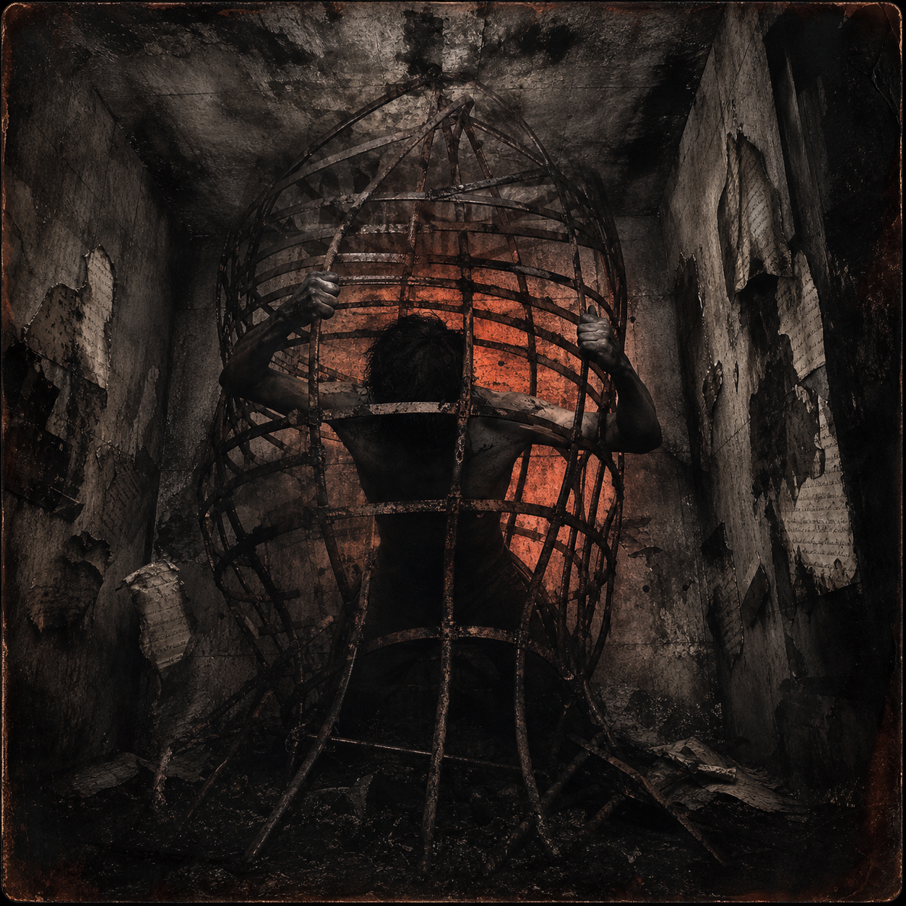
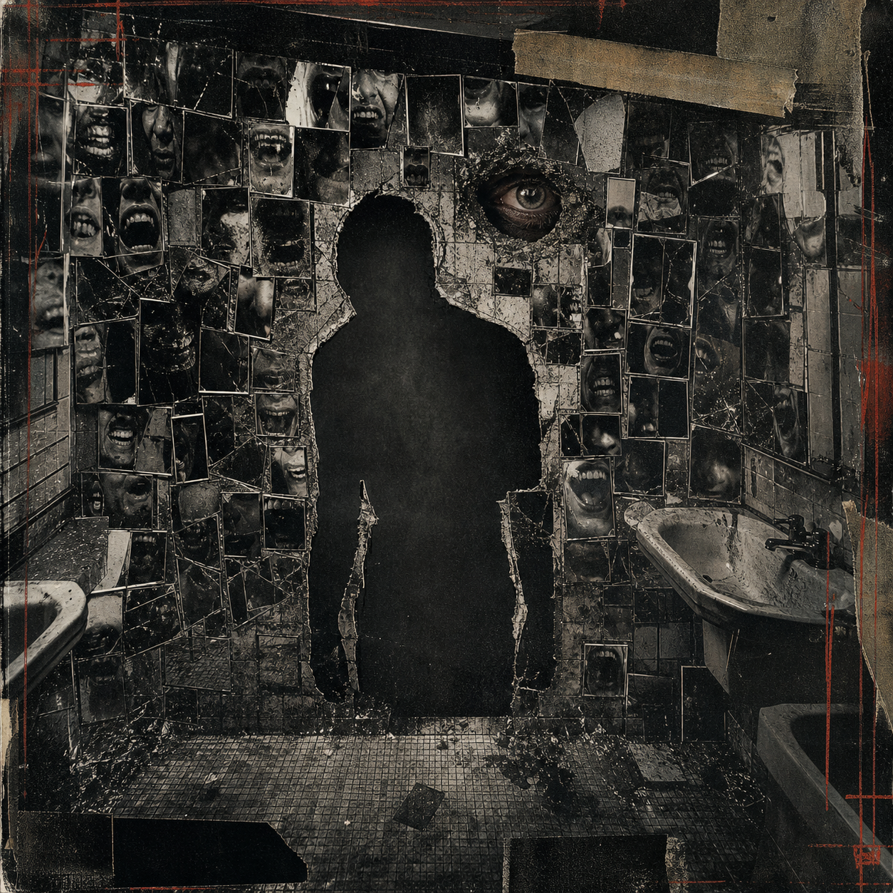
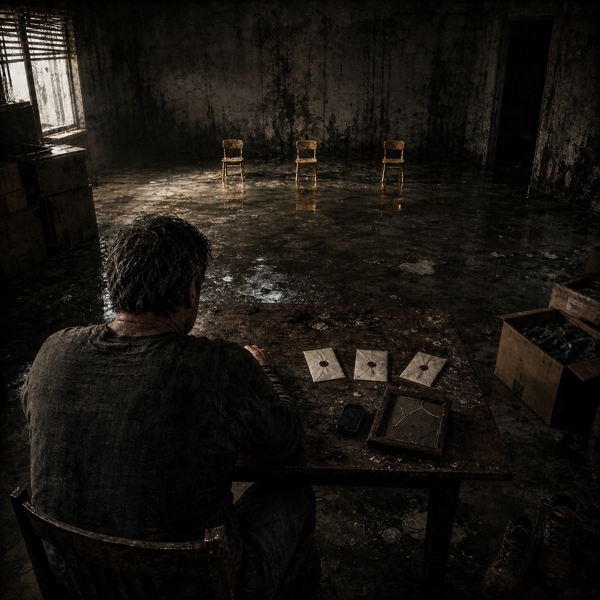
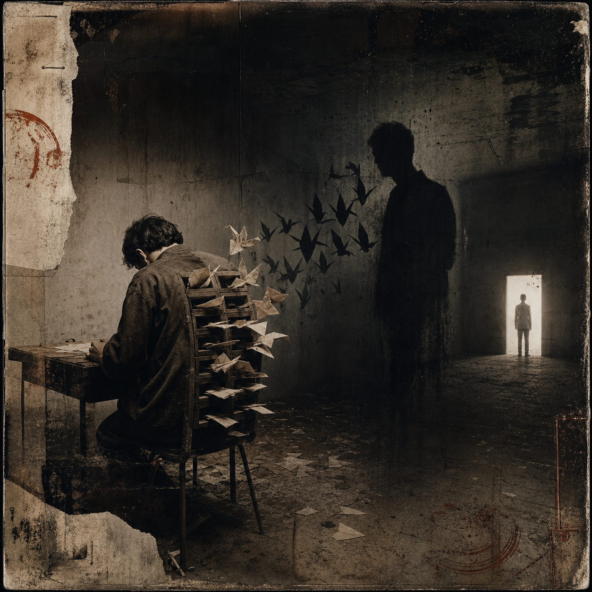
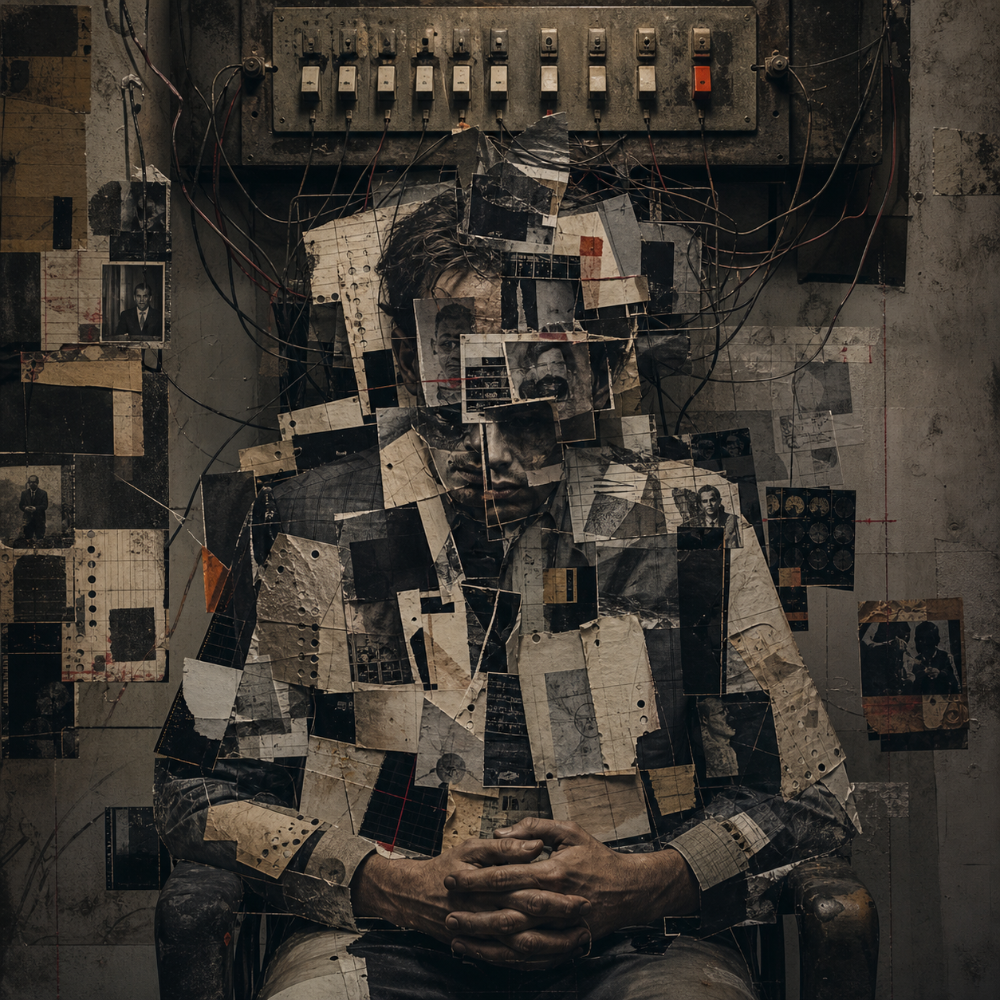
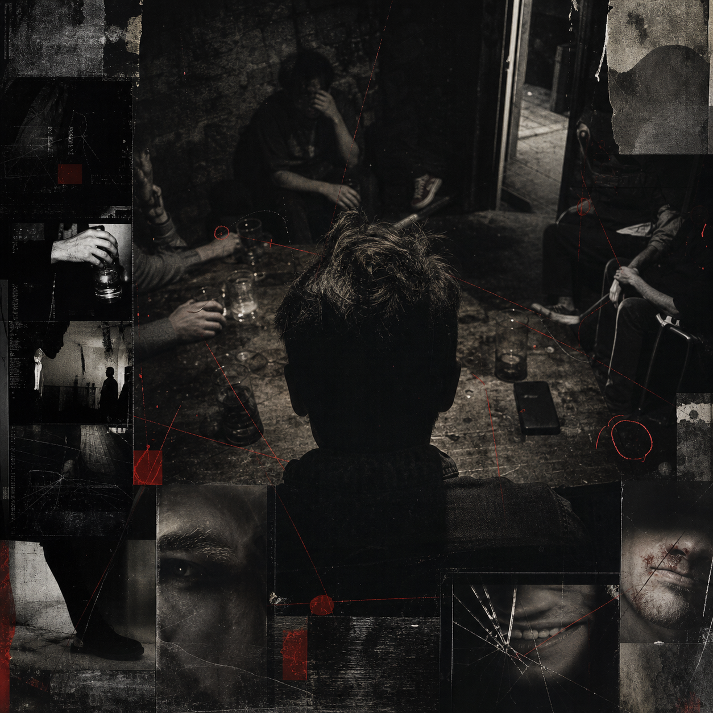

HEAR THE PART
I COULD NOT SAY.
I put the pressure, grief, rage, regret, and noise into the music because carrying it quietly was not working anymore.
PLAY THE CAGE DOOR →KNOW THYSELF. BREAK THE CYCLE.
I built Burkeonis from the parts of my life I used to hide: addiction, loss, broken relationships, a head that never shuts off, and the choice to stop lying to myself. The music says what I could not say. The tools came from what I needed when everything was falling apart.
NO REGRETS · NO FEAR · ONLY TRUTH
I put the pressure, grief, rage, regret, and noise into the music because carrying it quietly was not working anymore.
PLAY THE CAGE DOOR →RAD Mirror will not tell you who is right. It helps you pause, look at what is actually happening, and choose what you say next.
SEE HOW RAD WORKS →Start with The First Shadow — Worksheet 01 of the Burkeonis shadow-work series. This first worksheet is free so you can do the work before deciding whether to go further.
OPEN FREE WORKSHEET 01 →Self Mirror separates facts from interpretations, exposes contradictions, and shows you the next useful move without pretending every reaction is justified.
OPEN SELF MIRROR →THE WORK, AS IT BECOMES READY.
This archive holds the truth behind every finished track: why I made it, what it carries, and where it stands. Nothing appears here before it is ready.

The cage is not only what happened to me. It is every version of me I built to survive it: silence, rage, control, shame, and the belief that staying contained was safer than being seen.
The cage is not only what happened to me. It is every version of me I built to survive it: silence, rage, control, shame, and the belief that staying contained was safer than being seen. The door opens when I stop protecting the thing that is suffocating me.
ENTER THE FULL SONG FILE →
I can spend my life trying to correct every reflection people invent, or I can stop handing strangers the authority to tell me what I am. The song turns the mirror back toward the people who are most comfortable when nobody looks at them.
ENTER THE FULL SONG FILE →
This is not about one tragedy. It is about accepting one unavoidable truth: life does not negotiate. There is no villain here — only reality, ownership, living grief, and survival.
A father learning how to wait. A man owning the damage behind him. Scars that prove he lived, loved, lost, and kept moving.
READ THE DEEP ANALYSIS →
This is not a goodbye to my shadow. It is reconciliation — the moment I stopped asking my darkness to disappear and started asking it to walk beside me.
READ THE DEEP ANALYSIS →
The antagonist is my own operating system. It is not laziness. It is the invisible exhaustion of carrying more unfinished processes than anyone else can see.
READ THE DEEP ANALYSIS →
The power is restraint. I recognize masks because I have worn my own. Experience taught me that pressure reveals character and patterns are harder to fake than promises.
READ THE DEEP ANALYSIS →The private browser preview is live now. Accounts, saved history, pattern memory and connected progress remain in development.
OPEN THE PUBLIC PREVIEW →PUBLIC PREVIEW LIVE / FULL SYSTEM IN DEVELOPMENTOnly tools that are ready to use are shown here. Each one is designed to slow the moment down, reveal patterns, and help you choose what happens next.
Private conversation reflection
Pause before reacting, examine conversations and patterns, and rewrite what you need to say in safer words. Use Cloud Mode instantly or connect Ollama in Local Mode for greater privacy.
The entry point to Burkeonis shadow work
A hard, honest investigation into the trigger, projection, shame, survival strategy, and repeated pattern beneath a reaction. Worksheet 01 is free. The worksheets that follow will be paid.
Private reflection system
A private, local-first tool for separating facts from assumptions, comparing words with actions, and finding the pattern underneath a reaction.
Use the five live browser modes now and see which connected features are still being built.
WRITING IN PROGRESSTHE BOOKFollow the writing, preview material, and the truth behind the work.
FIELD NOTESJOURNALDirect writing on behaviour, shadow work, relationships, creativity, addiction, and the songs.
The public Self Mirror preview, RAD, Misophonia tools, No Last Words and printable protocols are usable now. Accounts, saved memory, paid memberships and connected progress are still being built.
WHY BURKEONIS EXISTS
Burkeonis exists to turn lived experience into something that can help another person find their footing.
I know what it is like when addiction, loss, broken relationships, fractured identity, and everything else hit at the same time. I am not building from a distance. I am building from what I survived.
The mission is simple: make honest music, practical tools, and reflective work that help people understand themselves without confusing, judging, or pretending to fix them.
I cannot choose anyone's path for them. I can hold up a mirror, share what I learned, and create a safer place to pause before the next decision.
YOU ARE NOT WHAT HAPPENED TO YOU. THE TRUTH CAN BECOME A WAY FORWARD.
THE PERSON BEHIND THE WORK
I am Jeff Burke. I built Burkeonis from the parts of my life I used to hide. The music, the tools, the writing — they all came from the same place: the decision to stop lying to myself about what happened and what I did with it.
I am not a therapist. I am not a coach. I am someone who went through it and made something from the other side. If it helps you, that is enough.
READ THE FULL STORY →THIS IS WHERE
Music. Shadow work. Personal truth. Digital tools. One evolving world for those who are done pretending they are fine.
For project questions, collaborations, press, or something that belongs in the Burkeonis world, email me directly — or follow the official Burkeonis Page as the social side of this world grows.
RELEASE NOTICES
Music, protocols, writing and major Self Mirror releases only. Until the full newsletter system is connected, email directly to join the release list.
JOIN THE RELEASE LIST →